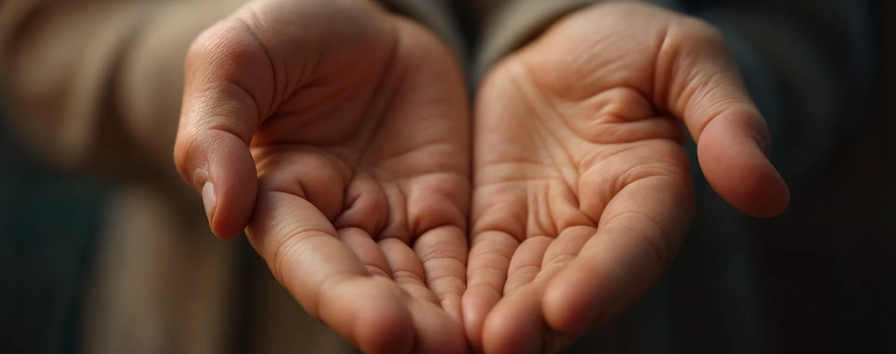

Des réponses qui inspirent votre générosité

Nous garantissons une transparence totale dans chaque campagne. Du suivi détaillé des dons aux mises à jour en temps réel des projets, chaque action est partagée ouvertement avec nos donateurs. Nous croyons que lorsque vous donnez, vous méritez de voir le véritable impact de votre générosité — comment votre contribution transforme des vies et bâtit des communautés plus solides et plus heureuses.
Vos dons soutiennent directement des initiatives qui changent des vies : distribution alimentaire, éducation pour les enfants défavorisés et accès à l'eau potable dans les villages reculés. Chaque contribution est utilisée avec soin pour créer un changement durable, renforcer les communautés et atteindre ceux qui en ont le plus besoin — chaque jour.
Oui ! Vous pouvez explorer et choisir parmi un large éventail de campagnes — éducation des enfants, autonomisation des femmes, aide d'urgence, soutien médical, distribution alimentaire et développement communautaire. Chaque campagne est conçue pour apporter un changement concret et de l'espoir à ceux dans le besoin. Votre générosité compte.
Nous partageons régulièrement des rapports détaillés, des témoignages inspirants et des mises à jour transparentes pour que chaque donateur voie comment sa contribution fait une vraie différence. Des bilans financiers aux histoires des bénéficiaires — nous vous tenons informé à chaque étape, en montrant comment chaque don est utilisé de manière responsable.
Grâce à votre généreux soutien, nous avons nourri des centaines de familles, construit des abris sûrs et offert réconfort, éducation et espoir à d’innombrables personnes dans le besoin. Chaque petit geste de générosité, chaque don et chaque moment de compassion s’additionne — créant une communauté plus durable, plus forte et plus solidaire.